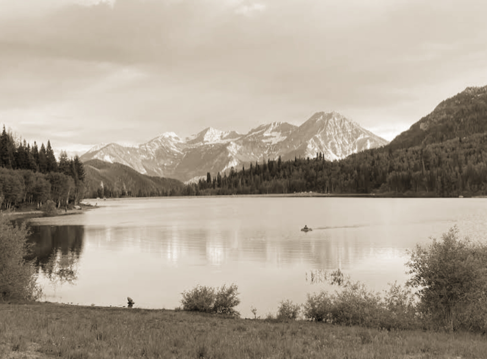

brasileiro morre afogado
ao salvar parente
Sáb. 12 de Abril de 2025
O brasileiro Daniel Braga Figueiredo, de 31 anos, morreu em um ato de heroísmo no Reservatório Silver Lake Flat, em Utah, nos Estados Unidos. No último sábado, ele entrou na água com uma prancha de stand-up paddle para tentar resgatar uma menina de 12 anos, sua parente, que havia sido levada pela correnteza em uma boia inflável. No entanto, acabou desaparecendo e só foi encontrado horas depois.
Embora tenha conseguido colocar a menina em segurança, Daniel desapareceu em seguida e seu corpo foi recuperado por equipes de resgate por volta das 21h30 (horário local), cerca de duas horas após o início das buscas.
Daniel era casado com Bruna Figueiredo e pai de três filhos, sendo o mais novo, Leo, nascido em junho deste ano. Ele atuava como especialista em marketing e mantinha forte ligação com a comunidade local, especialmente por meio de eventos familiares e atividades ao ar livre.
A tragédia mobilizou familiares e vizinhos — muitos se emocionaram ao saber da morte de um homem que, em vez de priorizar sua própria segurança, dedicou-se à proteção de um integrante da família. O Gabinete do Xerife do Condado de Utah expressou condolências aos parentes: “Gostaríamos de novamente oferecer nossas condolências à família” .
O reservatório Silver Lake Flat, situado no American Fork Canyon, a cerca de 64.km de Salt Lake City, é um local popular para caiaque, pesca, trilhas e camping, administrado pelo Serviço Florestal dos EUA.